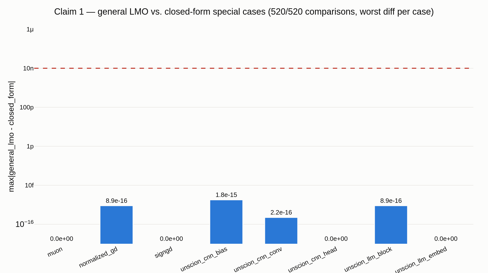
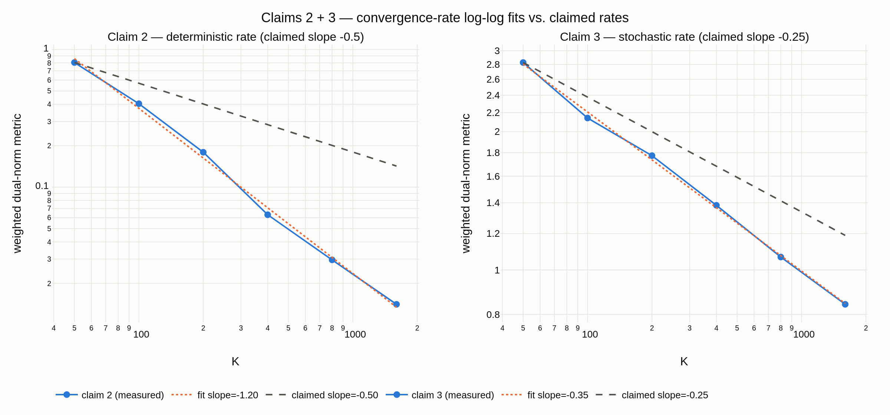
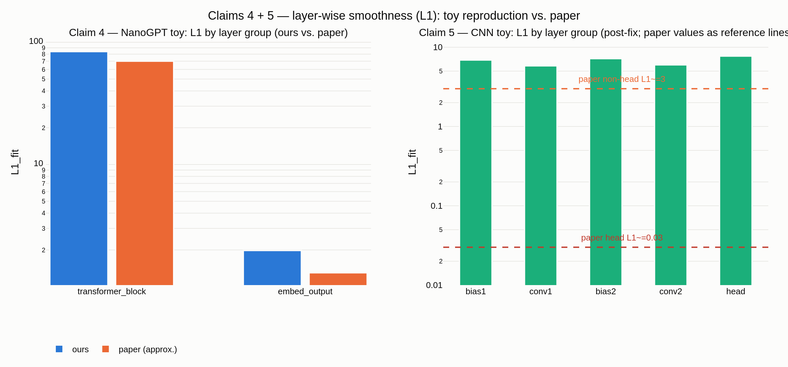

Gluon unifies layer-wise LMO optimizers — Muon, unScion, normalized GD, signGD — as one algorithm, proving O(1/√K) deterministic and O(K−1/4) stochastic rates. CPU-only, no GPU/torch: claim 1 is a full machine-precision check; claims 2–5 use small numpy toy models (gradcheck-verified) testing the qualitative pattern, not exact constants.

| Claim | Check | Verdict |
|---|---|---|
| C1 unify | 520/520 f64 | VERIFIED |
| C2 det. rate | −1.20 vs −0.5 | TOY (fast) |
| C3 stoch. rate | −0.346 vs −0.25 | TOY-VERIFIED |
| C4 NanoGPT L1 | 42× (paper ~54×) | TOY-VERIFIED |
| C5 CNN L1 | head L1 largest | REFUTED |
| C6 eNTK | absent from paper | REFUTED |

